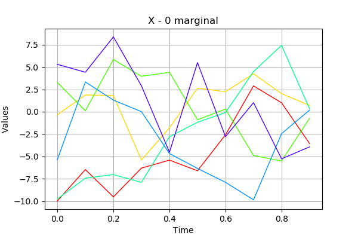
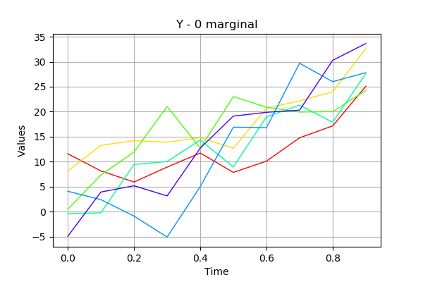

Add a trend to a process¶
In this basic example we are going to add a trend to a process.
The TrendTransform class enables to create a new process Y from a process X (no hypothesis on X needed):
In [20]:
from __future__ import print_function
import openturns as ot
import math as m
In [21]:
# Create a process
grid = ot.RegularGrid(0.0, 0.1, 10)
amplitude=[5.0]
scale=[0.2]
covModel = ot.ExponentialModel(scale, amplitude)
X = ot.GaussianProcess(covModel, grid)
In [22]:
# Draw a sample
sample = X.getSample(6)
sample.setName('X')
sample.drawMarginal(0)
Out[22]:

In [23]:
# Define a trend function
f = ot.SymbolicFunction(['t'], ['30*t'])
fTrend = ot.TrendTransform(f, grid)
In [24]:
# Add it to the process
Y = ot.CompositeProcess(fTrend, X)
Y.setName('Y')
In [25]:
# Draw a sample
sample = Y.getSample(6)
sample.setName('Y')
sample.drawMarginal(0)
Out[25]:
